TP Software Architecture and Mobile Programming
Progressive Web Applications
Présentation des PWA
Les Progressive Web Applications, introduites par Google autour de 2015, se présentent comme des applications
natives qui sont en réalités des applications web s'exécutent dans un "application shell" (un navigateur qui
s'exécute en plein écran, sans les barres d'adresse).
Les PWA se veulent :
Progressives :
elles fonctionnent sur n'importe quel périphérique en intégrant les fonctionnalités disponibles du navigateur et de l'appareil utilisé.
Sécurisées :
afin de répondre aux problématiques de sécurité des échanges entre les utilisateurs et les sites, les PWA
sont fiables et sûres par la mise en place d’un protocole HTTPS.
Engageantes :
elles proposent une expérience utilisateur immersive en plein écran et un réengagement facilité grâce à l'envoi de notifications push web.
Installables :
l'utilisation d'un fichier manifest permet aux PWA de proposer, à l'instar d'une application mobile native, l'installation d'un raccourci sur l'écran d'accueil du terminal mobile.
Rapides :
une fois le site chargé, la navigation doit se faire de manière rapide et fluide.
Optimisées pour le référencement :
utilisant les technologies du web, les progressive web app peuvent être référencées sur les moteurs
de recherche de la même manière que n'importe quel site web classique.
Indépendantes de la connexion :
Grâce à la gestion du cache via l’utilisation d’un Service Worker, une fois le contenu chargé une première fois, il est possible de le consulter même dans les zones de faible connexion réseau.
Par ailleurs, elles simplifient les coûts de développement, de maintenance, et leur mise à jour est facilitée.
Slides de présentation utilisées en TP
Application mobile de travail
Vous allez vous travailler dans ce TP avec une application web déjà réalisée, qui contient déjà toute la logique applicative
et le rendu graphique.
Cette application est une interface de consultation des horaires de bus de Besançon. Elle s'appuie sur
les données OpenData fournies par Ginko Mobilités et qui sont consultables à l'adresse : api.ginko.voyage.
L'application permet de consulter les horaires de bus à une station, ou pour une ligne donnée. Il est possible d'enregistrer
des stations (arrêt + ligne + direction) favorites pour accélérer les recherches.
NB. Pour simplifier, il n'y a pas de carte qui affiche les stations, mais sachez qu'il y a toutes les informations nécessaires
sur le site précédent pour afficher les stations, le tracé des lignes, etc. par exemple sur une carte OpenStreetMap.
Libre à vous, si cela vous intéresse, de continuer ce TP comme un petit projet personnel pour manipuler un peu ces aspects
que nous n'aurons pas le temps de couvrir durant ces 3 heures.
Tour d'horizon de l'application
L'application permet de visualiser les horaires de bus. Il y a basiquement 5 écrans :
L'écran de démarrage, qui n'a pas d'autre fonction que d'afficher un joli logo et
donner un exemple de gestion des événements tactiles.
L'écran des favoris, qui permet de visualiser les stations, lignes et directions qui ont été choisies
comme favorites par l'utilisateur. La petite étoile pleine en début de ligne signale le favori, elle
permet de retirer la station des favoris, en appuyant dessus.
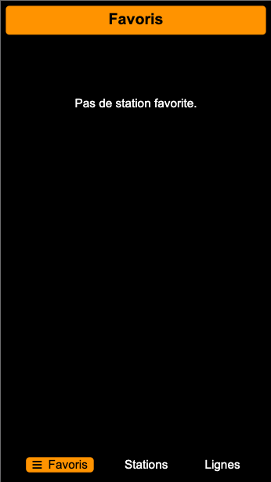
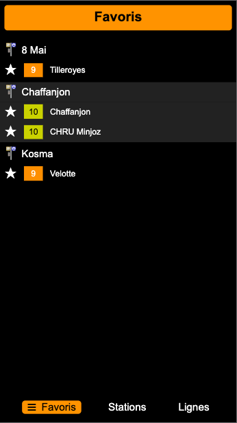
L'écran des stations liste les stations existantes, et permet de filtrer celles-ci pour n'afficher que
celles présentant la sous-chaîne actuellement saisie.
En touchant la station, on peut visualiser les lignes qui s'y arrêtent. Pour chacune, en début de ligne,
la petite étoile indique si la station ne fait pas partie des favoris (étoile pleine = favori, étoile vide =
pas favori). Un appui sur celle-ci permet de changer son statut.
Un appui sur une des directions déclenche l'affichage des horaires correspondants, centré sur la station
choisie (voir écran e ci-dessous).
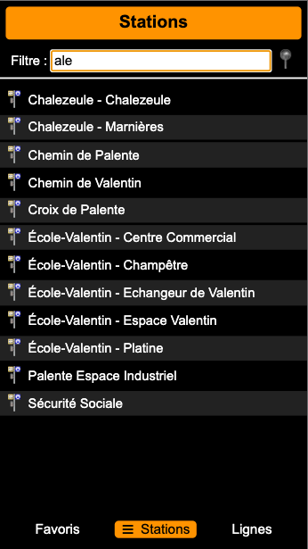
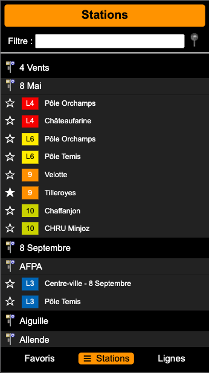
L'écran des lignes permet de visualiser les lignes qui parcourent la ville.
Appuyer sur une ligne permet d'afficher les directions existantes pour la ligne considérée.
Appuyer sur une de ces directions affiche les horaires de passage pour les différentes stations
qui sont sur la ligne et la direction ainsi choisies.
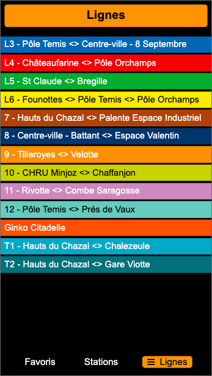
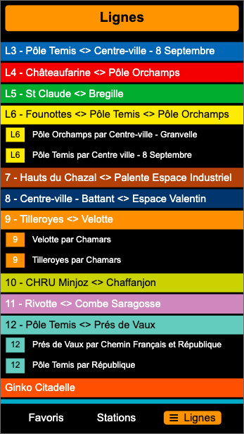
L'écran de visualisation des horaires permet de voir pour une date et une heure donnée les horaires de
passages aux différentes stations de la ligne considérée.
Quelques points à remarquer :
L'API de Ginko Mobilités se présente soit sous la forme d'une
API REST ou d'un ensemble de
fichiers au format GTFS
(Google Transit Feed Specification).
Si ce sont les données de l'API Ginko Mobilités qui sont utilisées, celles-ci sont servies par un web service
indépendant, les informations disponibles via l'API REST existante ne permettant pas d'obtenir simplement
les données utiles pour notre application.
L'API utilisée dans ce TP est donc une API REST ad hoc, hébergée sur la plateforme
Heroku, à l'adresse https://ginkobus-pwa.herokuapp.com.
Les routes de cette API sont les suivantes, chacune d'elle renvoie des données au format JSON dont le format est donné
par les exemples associés :
/stations : liste toutes les stations en donnant notamment leur nom, leurs coodonnées GPS, et les lignes
qui passent à ces stations.
Exemple : https://ginkobus-pwa.herokuapp.com/stations
/lignes : liste les lignes existantes en donnant le nom, les couleurs pour l'affichage, les
directions existantes, etc.
Exemple : https://ginkobus-pwa.herokuapp.com/lignes
/circuits : liste les circuits existants pour permettre leur affichage sur une carte ; ces circuits sont
référencés dans les descriptions des lignes (mais ils ne sont pas utilisés dans cette application).
Exemple : https://ginkobus-pwa.herokuapp.com/circuits
/horaires/:ligne/:direction/:date/:heure : liste les passages pour une ligne donnée, dans une
direction donnée, à une date et une heure donnée.
Exemple : https://ginkobus-pwa.herokuapp.com/horaires/3/0/20201120/12 donne les trajets et horaires de la ligne 3 dans
la direction 0 à la date du 20 novembre 2020 (au format AAAAMMJJ) autour de 12h.
Ces informations sont uniquement données pour vous aider à comprendre sur quoi s'appuie l'application. Vous n'aurez
normalement pas à les utiliser.
Les stations favorites sont sauvegardées à chaque modification dans le stockage
local du navigateur. Ainsi les favoris enregistrés sont toujours présents à la visite suivante.
Travail à réaliser
Récupérez dans cette archive le code de l'application au format web.
Prenez quelques minutes pour lancer l'application, la tester et découvrir le code. Testez l'application avec
Chrome (utile pour la suite), en simulant un appareil mobile (ytilisez le menu contextuel "Inspecter" puis
choisissez un appareil mobile, celui que vous voulez, plutôt dans la catégorie téléphone).
Attention, pour fonctionner, l'application doit être hébergée sur
un serveur web local (accès via http://...).
Pour héberger localement un site web :
Solution 1 : avoir déjà un serveur local (via apache, node ou via votre éditeur de code préféré - type Brackets)
Solution 2 : passer par Node.js pour créer un serveur local. Pour ce faire, créez un projet Node.js avec les modules
express (à installer via npm), http. Utiliser le code du fichier index.js fourni ici.
Attention au proxy dans les salles de TP pour lancer node et npm.
Pour fixer le proxy, si ce n'est pas déjà fait : npm config set proxy http://proxy-www.univ-fcomte.fr:3128 npm config set https-proxy http://proxy-www.univ-fcomte.fr:3128
Pour créer un projet Node.js à partir du fichier index.js : npm init (vous pouvez les laisser les valeurs par défaut à chaque étape)
Pour installer le package express à votre projet : npm install express --save
Lancer le serveur avec la commande node . ou node index.js
L'application servie doit se trouver dans le répertoire indiqué (par défault webapp)
Vous pouvez normalement consulter l'application à l'adresse : http://localhost:8080
Déployer l'application en HTTPS
Le but de cette partie est de déployer l'application sur un vrai serveur, en HTTPS, pour pouvoir
la tester sur votre téléphone.
Si vous ne disposez pas d'une solution d'hébergement qui vous est propre, Github permet avec
Github Pages de fournir un moyen simple
d'hébergement de fichiers.
Créez un dépôt sur Github et déposez le fichier de l'application
web. Suivez les indications pour créer un dépôt à partir d'un dossier existant.
Activez Github Pages et déployez la version initiale de l'application.
Dans les options de Github Pages (onglet settings), forcez la connexion au site en HTTPS.
Prenez votre téléphone ou une tablette, ouvrez un nagivateur et consultez la page qui est indiquée dans Github.
L'url devrait être de la forme : https://votre-login.github.io/votre-projet
Vous pouvez vous amuser à tester l'application. La liste initiale des produits déjà connus étant un peu
restreinte, n'hésitez pas à l'enrichir pour avoir vos données à vous.
N'oubliez pas, en cas de modification du code, de mettre à jour sur le serveur avec
git commit -am "votre message de commit" puis git push.
Réaliser un audit de l'application
Chrome propose, dans l'onglet "Audits" des outils développeurs, l'outil LightHouse qui permet d'analyser
un site ou une application web, notamment pour vérifier si celle-ci est compatible avec les exigences liées
au déploiement d'une Progressive Web App qui se comporte de façon optimale.
Bien évidemment, vous n'aurez pas à faire cet audit à la main, c'est l'outil LightHouse qui le fera
pour vous. Dans les outils développeur de Google Chrome, allez à l'onglet "Lighthouse" et lancez un
audit "Progressive Web App" comme illustré ci-dessous (vous pouvez décocher toutes les autres catégories).
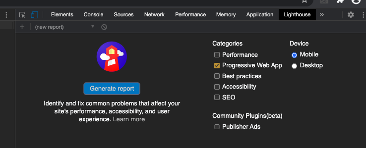
Lancer l'audit de l'application hébergée pour une PWA. Deux points cruciaux devraient manquer :
l'existence d'un fichier manifest pour déclarer l'application comme utilisable hors du navigateur,
comme une web app installable sur votre appareil
la mise en place d'un Service Worker qui va permettre d'utiliser l'application hors ligne en
mettant en cache une partie des ressources nécessaires, et en redirigeant vers le cache les
requêtes HTTP qui seraient faites alors que l'appareil est hors-ligne.
Vous devriez, de ce fait, obtenir un résultat d'audit proche de celui de la capture d'écran ci-dessous :
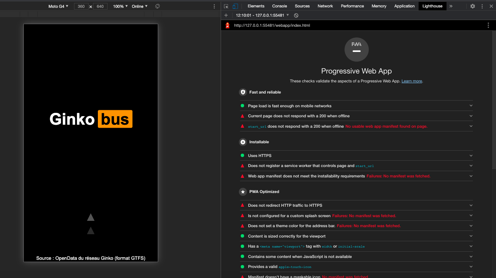
Dans les étapes suivantes, nous nous appuyerons sur les ressources ci-dessous, qui seront utiles pour réaliser
les étapes nécessaires pour créer la PWA :
Auditez en local, et mettez à jour votre site sur le serveur. Si votre manifest ne contient pas d'erreurs, vous
devriez obtenir un résultat d'audit proche de la capture ci-dessous.
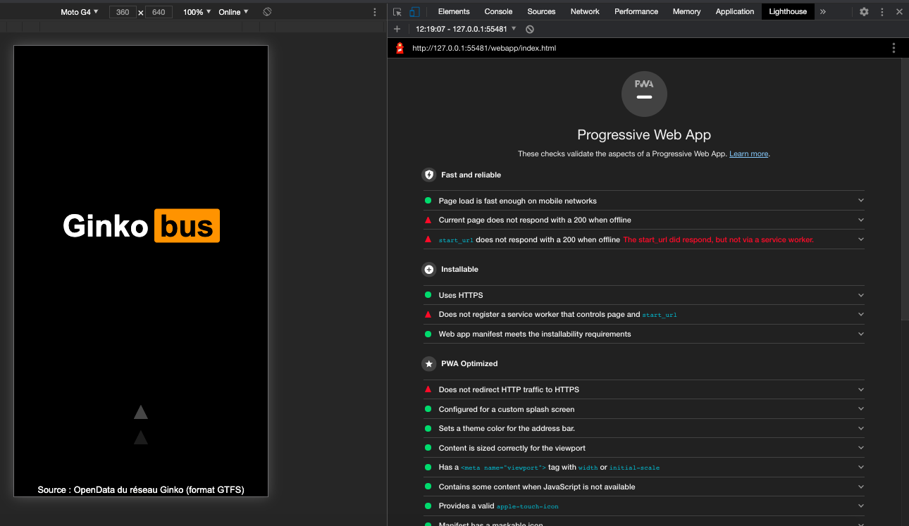
Si vous consultez l'application en ligne avec un téléphone pas trop ancien vous devriez vous apparaitre une
banière qui vous propose d'ajouter l'application à l'écran d'accueil. Validez, et vous devriez voir un
raccourci qui se créé dans vos applis, utilisant l'icône et le nom spécifié.
Si la banière n'apparaît pas, don't panic, vous pouvez obtenir le même résultat en choisissant "ajouter
à l'écran d'accueil" (petit bouton "home" au bout de la barre d'adresse qui doit apparaître si le manifeste
est correctement réalisé).
Vous constaterez que l'application s'installe sur l'appareil et s'exécute en plein écran (sans les
barres de navigation) comme une application native !
Rendez l'application utilisable hors ligne
La version de l'application obtenue à l'étape précédente est bien, mais ce n'est pour l'instant qu'une coquille
qui charge les ressources depuis internet. Elle n'est donc pas utilisable hors connexion.
L'objectif de cette étape va être d'ajouter un Service Worker qui va permettre d'utilier l'application
hors ligne en spécifiant la stratégie de mise en cache des données de l'application.
Vous pouvez utiliser la stratégie proposée dans ce document qui consiste, à l'installation, à mettre en cache
toutes les données listées comme ressources, et à consulter ensuite ce cache en priorité (et sinon, aller
chercher la ressource sur le réseau et la mettre en cache).
Cette stratégie a pour avantage de permettre un chargement très rapide des données déjà en cache.
Pour l'instant, c'est la stratégie que nous allons utiliser.
Les deux événements auxquels vous devez répondre pour l'instant sont : install pour l'installation
du Service Worker et fetch pour décrire la stratégie d'accès aux ressources (dans le cache ou
sur le réseau). Comme dans l'article ci-dessus, utilisez une liste de ressources que vous ajoutez au cache
à l'installation.
Une fois cette stratégie implantée, vous devriez pouvoir auditer l'application, avec (presque) tous les
feux au vert, si vous êtes en local, comme ci-dessous :
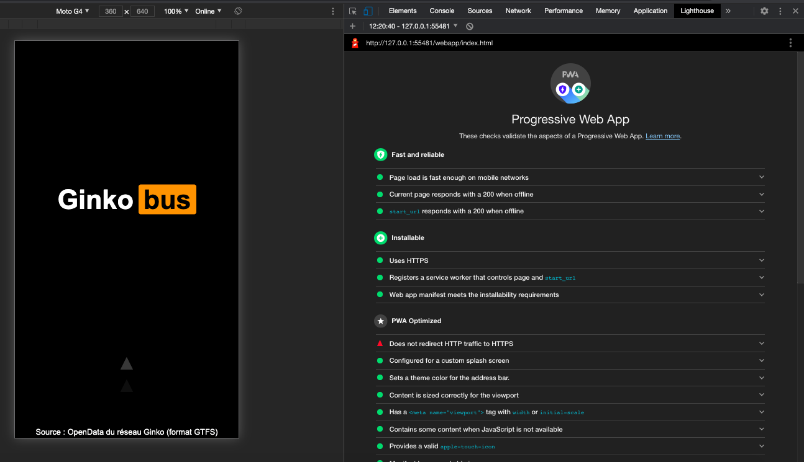
Déployez l'application sur le serveur. Auditez-la depuis le serveur (qui fournit l'hébergement forcé en HTTPS).
Tous les voyants sont normalement au vert.
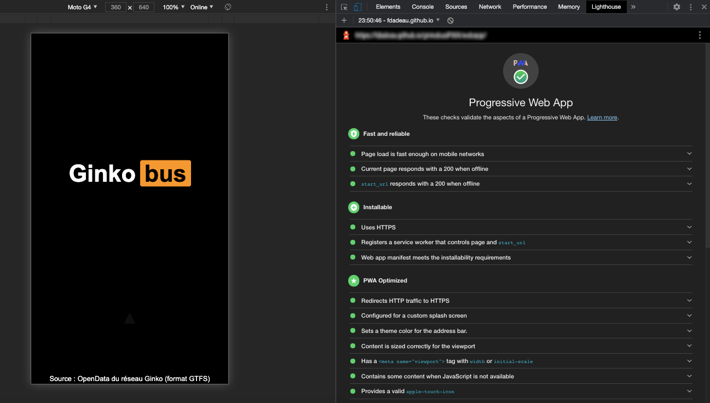
Vérifiez dans la partie "Application", "Cache Storage" que les fichiers que vous avez décrits ont
correctement été mis en cache.
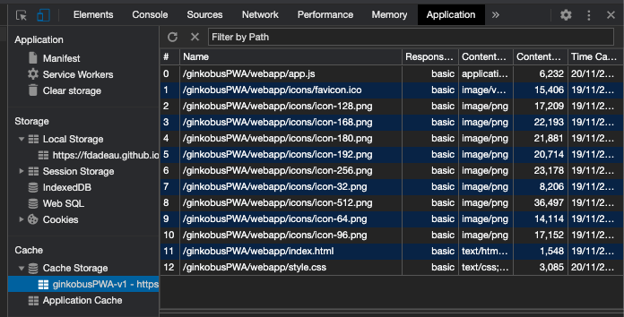
Reprenez l'application sur votre téléphone et relancez-la. Les données doivent être mises en cache.
Quittez l'application, mettez l'appareil en mode avion, et relancez l'application. Vous devriez pouvoir
la faire fonctionner et profiter de ses fonctionnalités alors que vous êtes hors-ligne !
N'est-ce pas merveilleux ?
Gérer les évolutions du contenu de l'application
La stratégie mise en place précédemment consiste à mettre en cache toutes les données applicatives
et piocher ensuite dans le cache en priorité. Si une donnée n'est pas présente, alors celle-ci est
récupérée sur le réseau et elle-même ajoutée au cache.
On remarquera que deux types de données sont ainsi mises en cache :
les ressources de l'application : fichiers HTML, CSS, scripts JS, icones
les réponses aux requêtes envoyées au serveur distant pour connaître les stations, les lignes et les horaires
Dans l'absolu, si l'application n'a pas vocation à évoluer ou si elle s'appuie sur des données statiques,
c'est une option viable. Mais si l'application peut être amenée à voir ses données évoluer,
il ne sera pas possible de faire évoluer celles-ci sans remettre toute l'application en cache,
ce qui n'offre pas une grande souplesse. De même, si l'application dépend de ressources externes,
ces dernières ne devraient pas être issues en priorité du cache, car leurs évolutions seront de ce
fait invisibles.
Pour notre application, s'il est probable que l'interface homme-machine a proprement parler n'évolue
pas, il est possible que les lignes ou les arrêts évoluent (certes pas toujours, mais bon...).
Il est par contre certain que les horaires vont évoluer, car ceux-ci sont réactualisés tous les 3 mois.
La consultation des horaires est donc typiquement le genre de demande qui ne doit être issue du cache
que si l'application est hors-ligne. En revanche, si une connexion est disponible, cette ressource
doit être récupérée via le réseau.
Pour répondre à ces besoins, nous allons implanter une stratégie ad hoc de service de contenu.
Les fichiers structurels de l'application (code HTML, CSS, icônes) sont mis en cache à
l'installation et récupérés depuis le cache (stratégie Cache only).
Le script de l'application, les listes de stations, des lignes de bus et les horaires seront
prioritairement récupérées sur
le réseau et mises en cache à cette occasion (strategie On network response) :
ou, à défaut, reprises du cache si le réseau n'est pas disponible :
Il est possible que les horaires demandés n'existent pas dans le cache. Dans ce cas, pas de
soucis, l'application affiche normalement un message indiquant que le réseau est inaccessible dans
l'écran des horaires.
NB. Une stratégie (mais que l'on implémentera pas ici) pourrait être que le
service worker renvoie une réponse propre indiquant que les horaires ne sont pas disponibles,
ce qui sera affiché dans l'interface (le schéma montre une ressource piochée dans le cache,
mais il est aussi possible de générer la réponse directement depuis le Service Worker)
(stratégie Generic fallback).
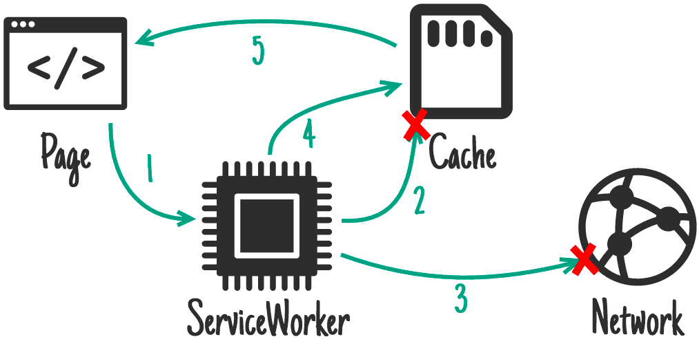
Modifiez le code associé à l'événement fetch pour faire en sorte de vérifier le
fichier qui est demandé (en allant contrôler la valeur présente dans evt.request.url)
pour aiguiller la demande vers la source appropriée.
Si vous devez faire plusieurs essais, et il est plus que probable que ce soit le cas, n'hésitez pas
à aller dans l'onglet "Application", à vider le "Cache storage" (dans le menu à gauche), et à désinscrire
le service worker (lien "unregister" à droite) avant de recharger votre application. Cela permettra de
repartir d'une base saine, et évitera les éventuels fichiers qui s'exécutent depuis le cache au lieu de
considérer les fichiers que vous venez de modifier.
Ce panneau présente également un bouton "Offline" qui permet de simuler la mise hors-ligne de l'application.
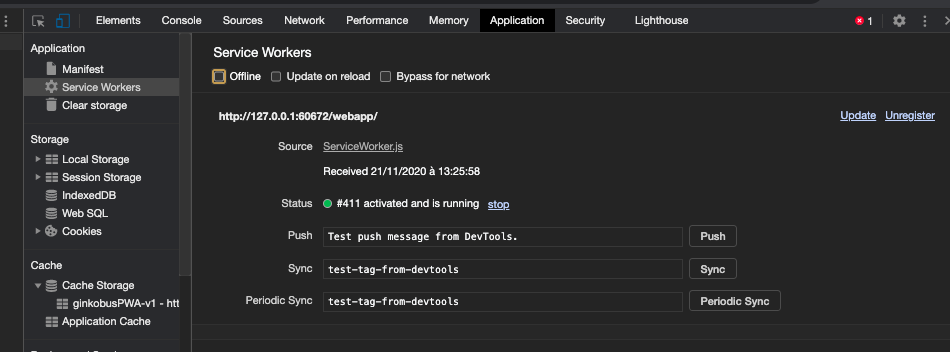
Mettez en ligne l'application et testez sa bonne exécution (vous pouvez instrumenter le code pour
faire apparaître les messages dans la console indiquant d'où les fichiers demandés sont récupérés).
Si tout fonctionne, vous êtes un boss. Félicitez-vous.
Ajout d'une fonctionnalité : géolocalisation
Les plus observateurs d'entre vous auront sûrement repéré la présence d'une petite punaise grisée
à côté du filtre. Cette punaise est un bouton qui a pour objectif de trier les stations pour les
afficher en fonction de leur distance à la position courante de l'utilisateur.
Toutes les coordonnées étant exprimées sous la forme de latitudes et de longitudes, il sera nécessaire
de réaliser un calcul de distance orthodromique
entre deux points GPS. Don't Panic! La formule et le code Javascript correspondant vous sont donnés
sur ce site.
Une fois la géolocalisation en place, le tri par distance se rajoute au filtre déjà existant.
La punaise en couleur indique que ce tri est actif (appliquer la classe active sur
l'élément HTML considéré). Rappuyer sur la punaise désactive ce tri (les
stations sont à nouveau triés par ordre alphabétique) et la punaise redevient grisée.
Indication technique : en fouillant un peu le code, autour de la ligne 400 du script app.js,
vous trouverez une fonction nommée remplirStations qui permet de générer le contenu de la liste
de stations. Cette fonction s'appuie sur une variable fSort qui, si elle est non vide, doit être
une fonction permettant de
déterminer le critère de classement qui s'applique sur les stations (les paramètres sont deux identifiants
de station).
Le travail de cette partie consistera donc à instancier (ou réinitialiser) la variable fSort
et appeler la fonction remplirStations() pour rafraîchir l'affchage.
Par ailleurs, si vous examinez le code de cette dernière fonction, vous verrez aussi qu'il est possible
d'ajouter un champ distance aux stations pour indiquer leur distance à la position GPS
courante et le faire apparaître dans cette liste.
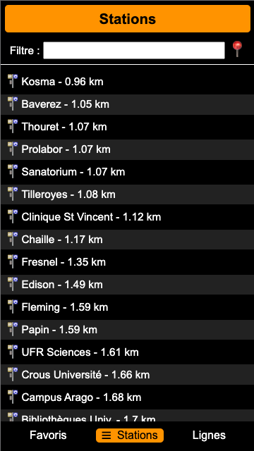
Et, pour les courageux, vous pouvez intégrer
une carte OpenStreetMap
pour visualiser les tracés des circuits des lignes et les stations...
et aller postuler pour un job au service informatique de Ginko Mobilités, pour retrouver nos anciens étudiants 😀
 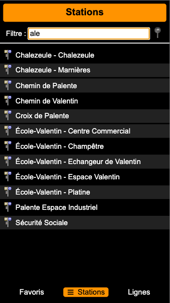
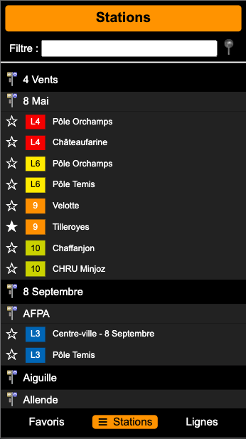
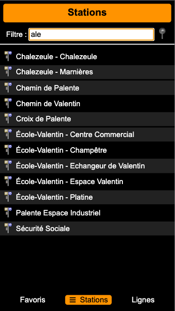
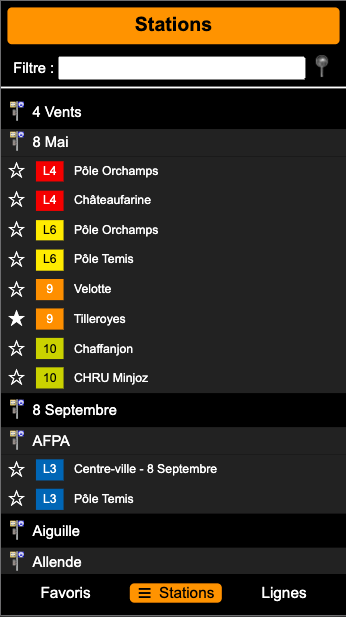

 ou, à défaut, reprises du cache si le réseau n'est pas disponible :
ou, à défaut, reprises du cache si le réseau n'est pas disponible :